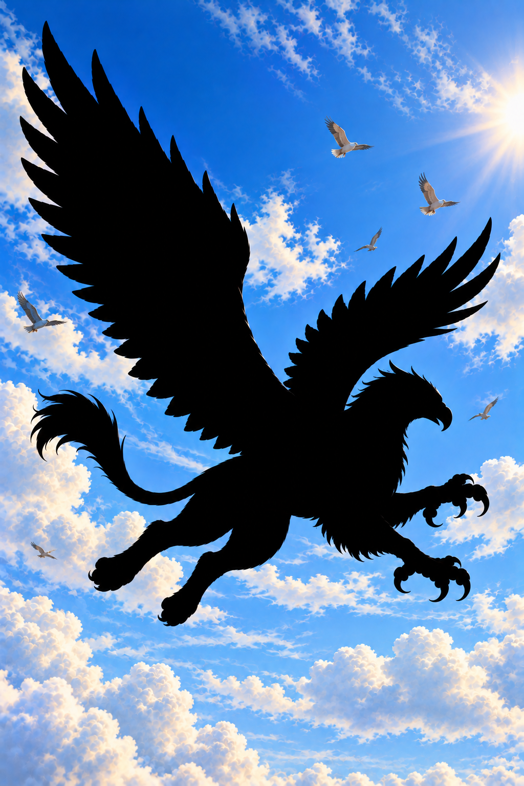

Griffin • Tilt Wave Reflection v4
Approved Griffin artwork • Original gold trim • Gold gemstones • Interactive tilt • Rich iridescent sky foil and tilt-controlled curved wave reflection • Protected black Griffin


Tilt: 0° horizontal / 0° vertical